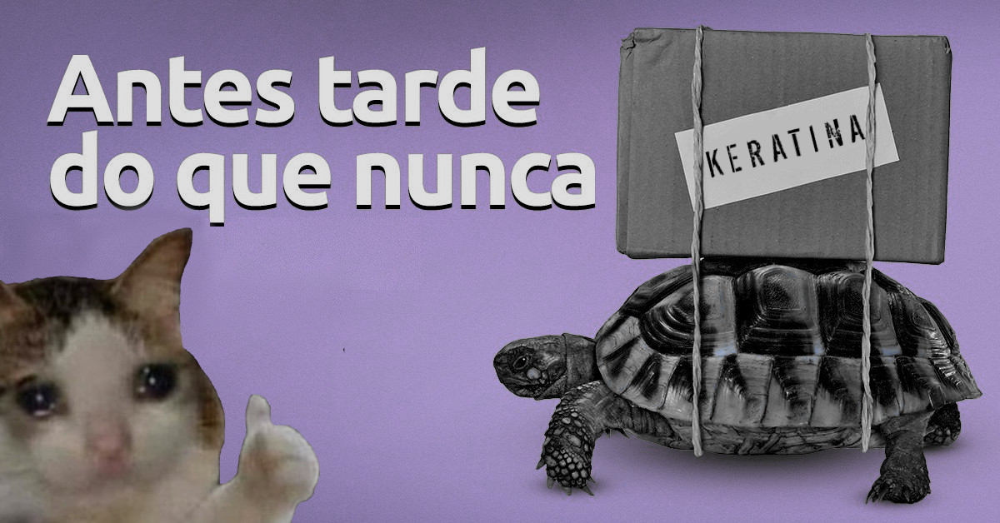

Keratina
Você acorda assim que uma torneira enche o seu peito de seiva. Galhos saem por todos os lados, levantando as ruínas de um prédio até em cima das nuvens, com você no topo.
Você está sem cabeça e sem mãos, e precisa seguir em frente para descobrir quem é você, e qual o seu propósito.
Keratina é um dos meus primeiros projetos que não está diretamente atrelado a faculdade ou outra instituição, sendo desenvolvido em meu tempo livre.
Plataforma: Windows
Gênero: Plataforma / Aventura
Idiomas: Português (Por enquanto)
Tempo de Jogo: ??? (Eu realmente não sei ainda)
